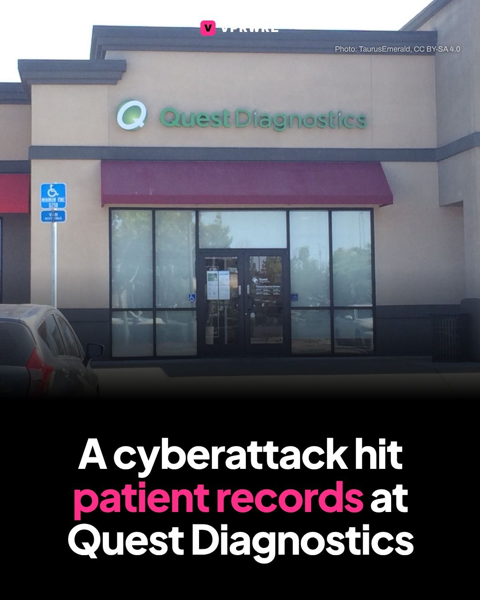
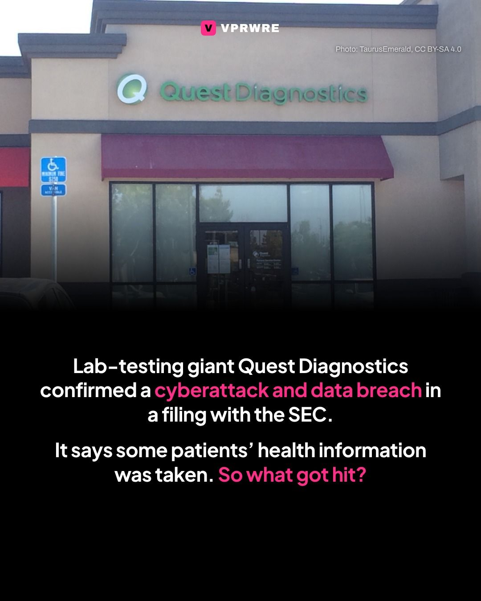
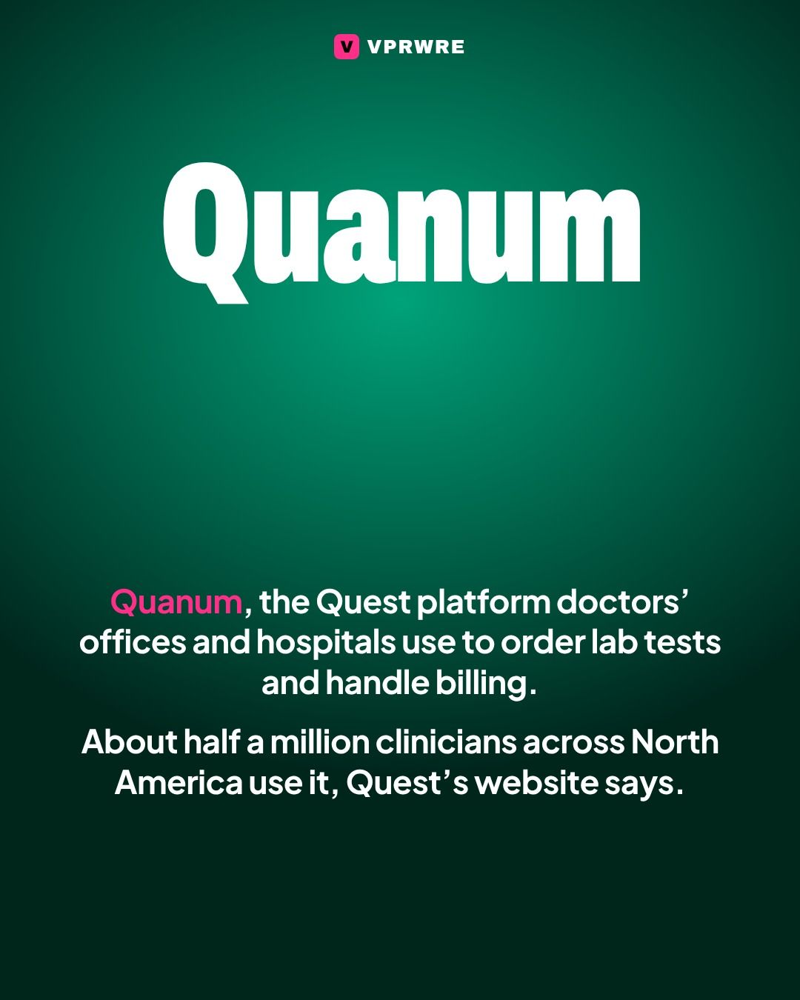
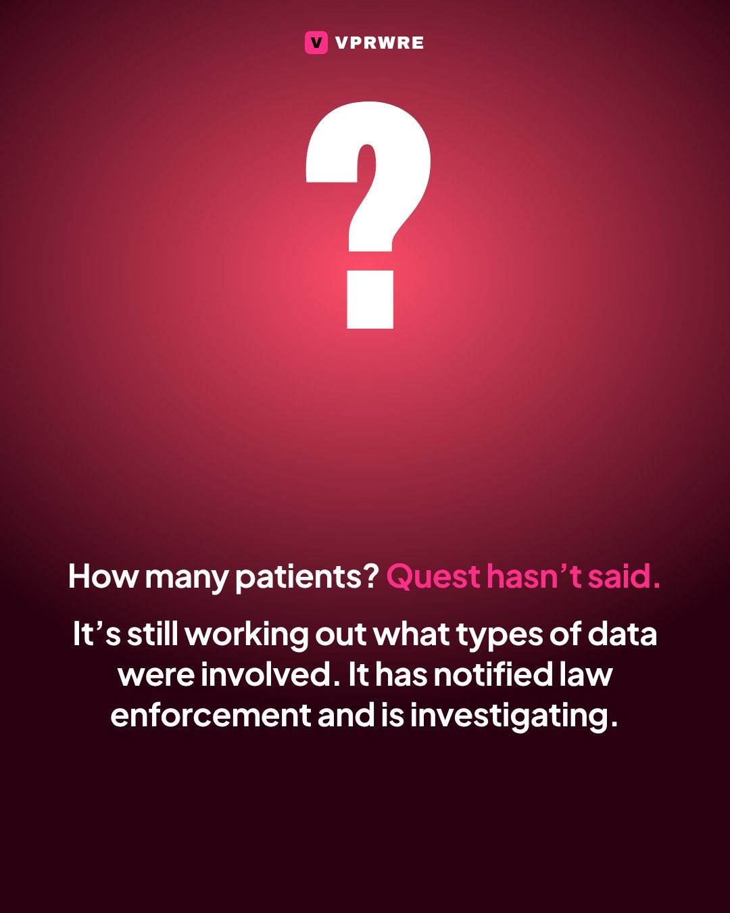
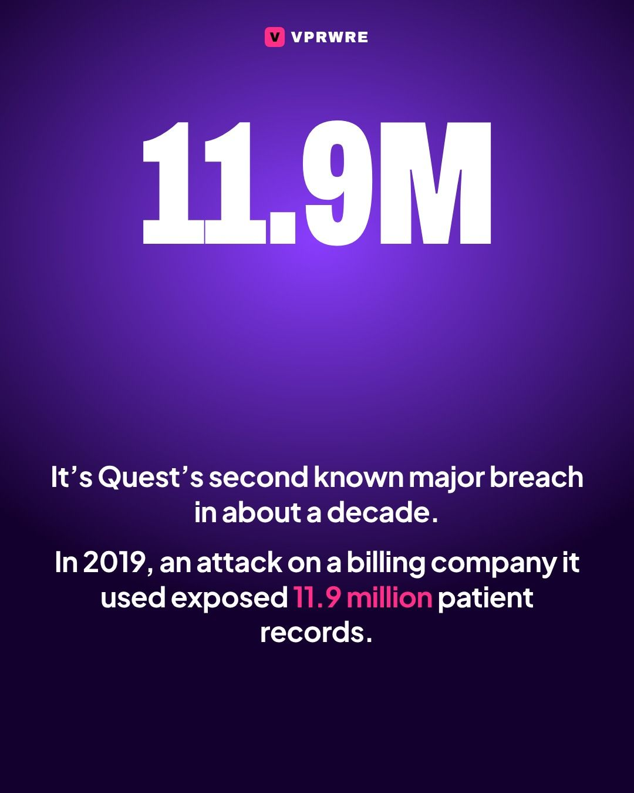
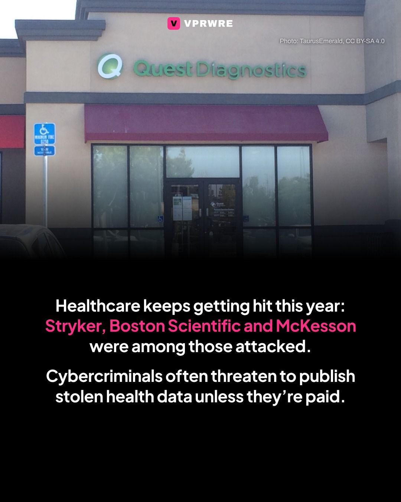
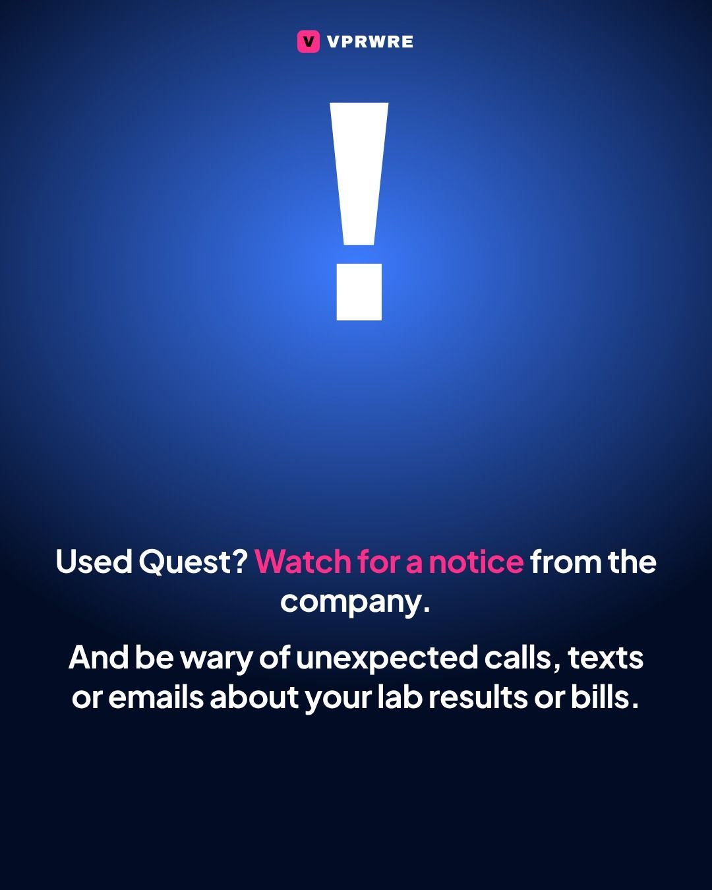

Policy
A cyberattack hit patient records at Quest Diagnostics.
A cyberattack hit patient records at Quest Diagnostics.
Lab-testing giant Quest Diagnostics confirmed a cyberattack and data breach in an 8-K filing with the SEC, saying unauthorized access included “certain patient records.” A notice on its website says some patients’ protected health information was taken, including “personal information and patient records,” and Quest is still determining which types of data were involved.
The attack targeted Quanum, the Quest platform that doctors’ offices, hospitals and other practices use to order lab tests and handle billing, which stores patient health records and diagnostic and billing data. About half a million clinicians across North America use it, according to Quest’s website. Quest hasn’t said how many patients were affected or whether hackers have made demands. It says it notified law enforcement and is investigating.
It’s Quest’s second known major breach in about a decade: in 2019, an attack on a third-party billing company exposed 11.9 million patient records. Healthcare has been hit hard this year, including attacks on Stryker, Boston Scientific and McKesson.
If you’ve used Quest, watch for a notice from the company and be wary of unexpected calls, texts or emails about your lab results or bills.
Photo: Quest Diagnostics in Manteca, California, TaurusEmerald, CC BY-SA 4.0
The carousel
8 slides · Open on Instagram








Disclosure: VPRWRE drafts with Claude, Anthropic’s AI.